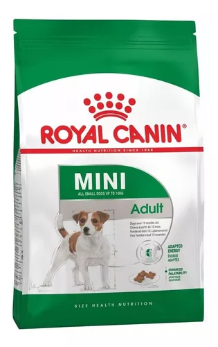

Alimento Royal Canin Size Health Nutrition Mini Adult para perro adulto de raza pequeña sabor mix en bolsa de 7.5 kg
Descripcion
Royal Canin produce alimentos centrados en las necesidades únicas de tu mascota, brinda una nutrición específica y eficaz, y lo ayuda a convertirse en su mejor versión
Tu mascota siempre saludable
Ellos son parte de la familia y nos regalan su compañía y su cariño. Para que se mantengan sanos y fuertes, una alimentación balanceada es esencial. Brindale a tu perro los nutrientes que necesita para que pueda correr, saltar y jugar todo el día.
Beneficios del alimento seco
La mayor ventaja de la comida seca para mascotas es que se puede almacenar por mucho más tiempo sin que se deteriore, y evita la aparición de hongos o bacterias. Además, este tipo de alimento ayuda a eliminar el sarro y a retrasar la formación de la placa dental con el proceso de masticación y trituración.